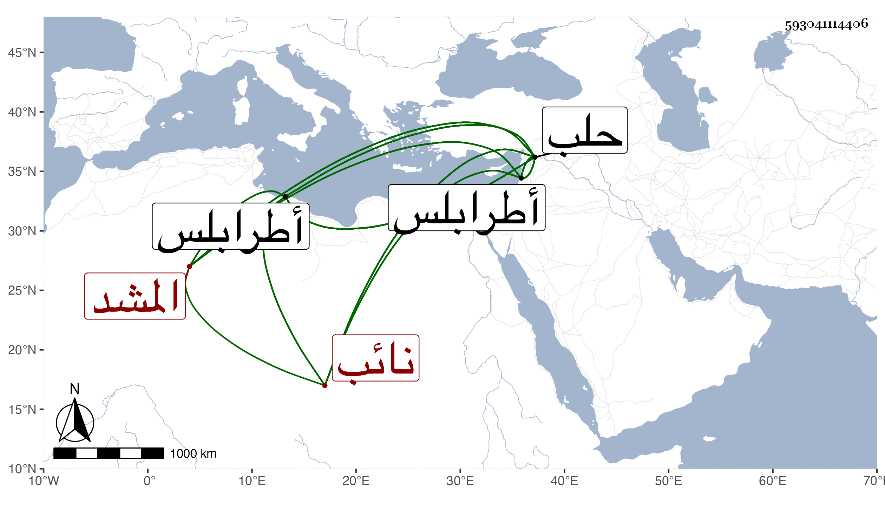

0902Sakhawi.DawLamic.ITO20230111-ara1.EIS1600.593041114406
Biography ID: 593041114406
1096
يشبك المشد نائب حلب . كان شابا جاهلا فاسقا ظالما عسوفا طماعا اشتراه المؤيد وهو نائب طرابلس بألف دينار كما سمعه العيني من المؤيد ، ثم ترقى عنده إلى أن عمله شاد الشربخاناه ثم أعطاه تقدمة ثم نيابة طرابلس ثم نيابة حلب ولم يشتهر عنه معروف ، وذكره ابن خطيب الناصرية فقال قدمه أستاذه فكان عنده حين نيابته بحلب شاد الشربخاناه فلما استقر في المملكة ولاه نيابة طرابلس ثم نقله منها إلى حلب سنة عشرين ، وكان شابا فارسا شهما شجاعا بنى بحلب مسجدا بالقرب من الشاذ بخنية وجنينة بالقرب منه وتربة ومكتب أيتام ثم قتل بعده في المحرم سنة أربع وعشرين ، ونسبه بعضهم يوسفيا .
